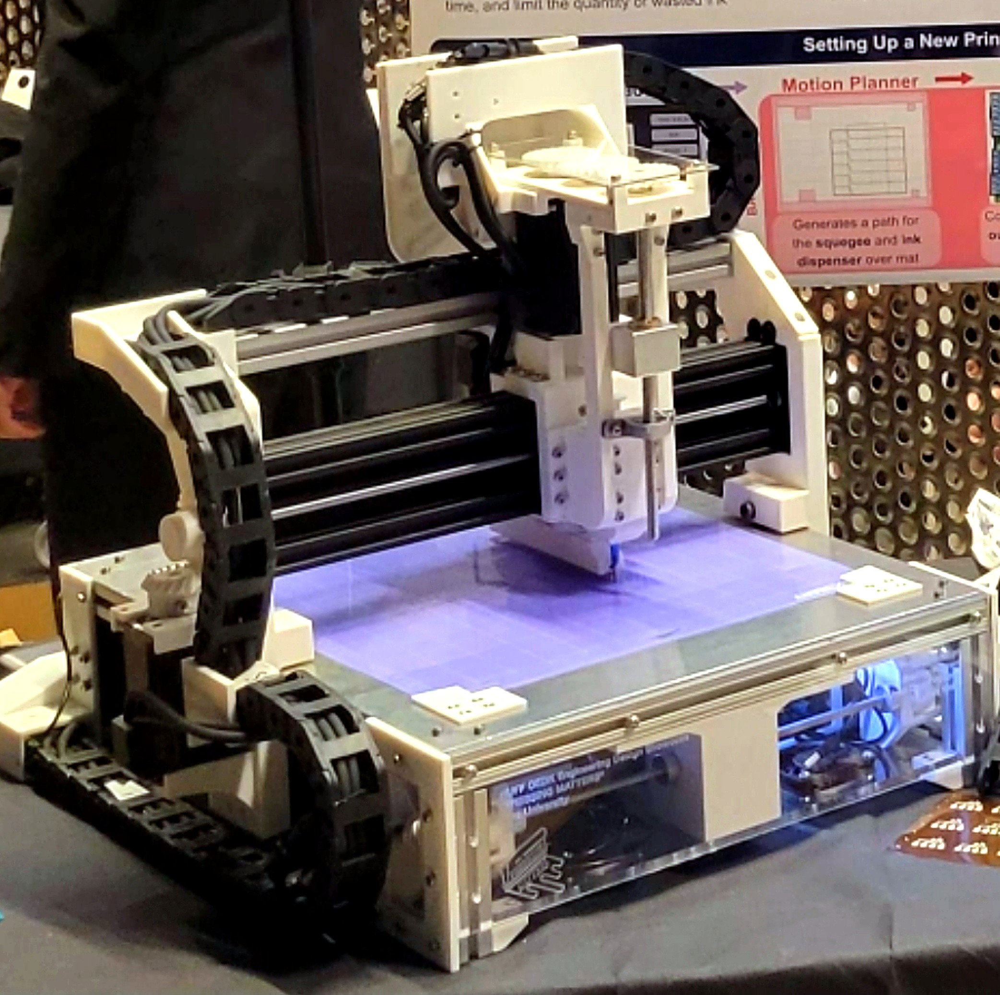
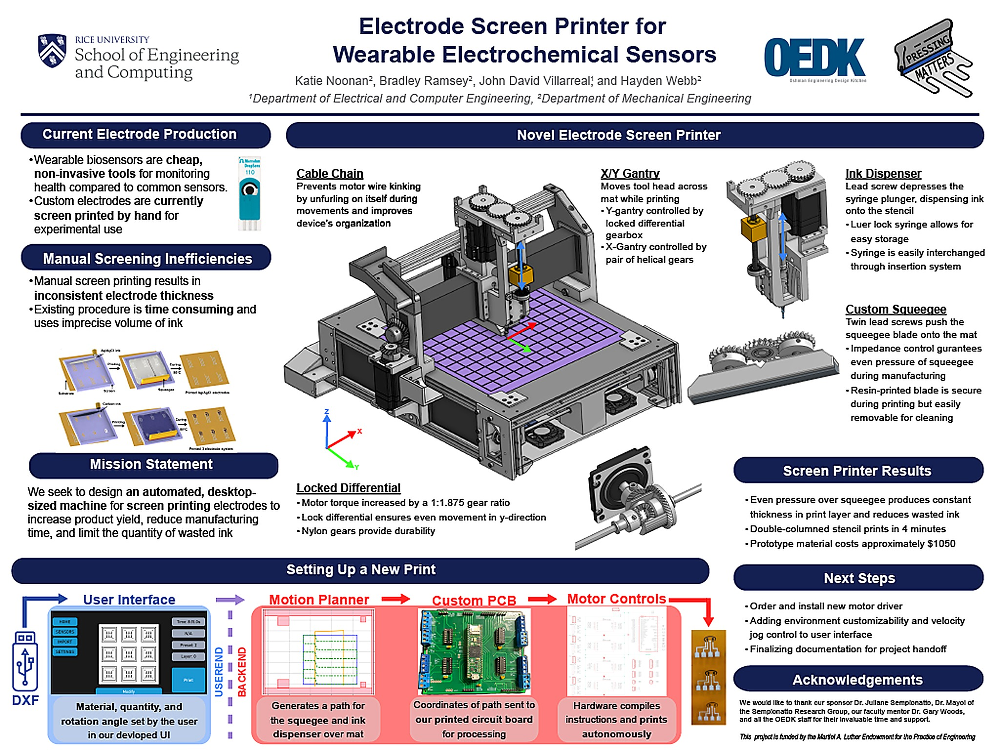

AUTOMATED
BIOSENSOR SCREENER

My senior capstone project was a precision ink-dispensing system built for biomedical screen-printing applications, developed as the mechanical lead on Team Pressing Matters.
The Sempionatto Research Group develops wearable, skin-like biosensors that collect and analyze biofluids to monitor users' health. Sensors must be flexible and thin, which is why they're currently made with conductive ink, minimizing electrode height. Current production mechanisms are large, expensive, and still time-consuming. Meanwhile, manual screen printing is slow and wastes ink, and is also physically demanding due to the consistent pressure it requires. Our team was tasked with creating a low-cost automated system for the Sempionatto Research Group, with the potential to share the design with other research groups.
The core challenge was controlling fluid deposition precisely enough for a biomedical use case while keeping the hardware modular and manufacturable — not a one-off lab rig. I directed CAD development and testing for both the fluid delivery path and the squeegee mechanism that spreads material across the substrate, iterating through several sub-assembly revisions to hit tolerance and repeatability targets. The four main subsections of the design were the X-Y gantry system, the fluid deposition system, the squeegee system, and the electronics system.

The fluid deposition system used a modular, user-friendly design. It allowed for syringes with medical-grade, blunt-tip needles, enabling precise dispensing without risk of overpressuring the syringe.
The squeegee system was also modular: the squeegee tip used a dovetail fastening design, allowing for easy replacement and further prototyping of squeegee tips.
Because the end application touched biology as much as mechanics, a large part of the job was coordination: translating requirements from the biology team into mechanical specs, and working with the electrical team on sensing and actuation so the three disciplines converged on one working system rather than three disconnected ones.

| ROLE | Mechanical Lead |
| TEAM | Mechanical, Electrical, Biology |
| FOCUS |
Fluid systemsCADDFM
|